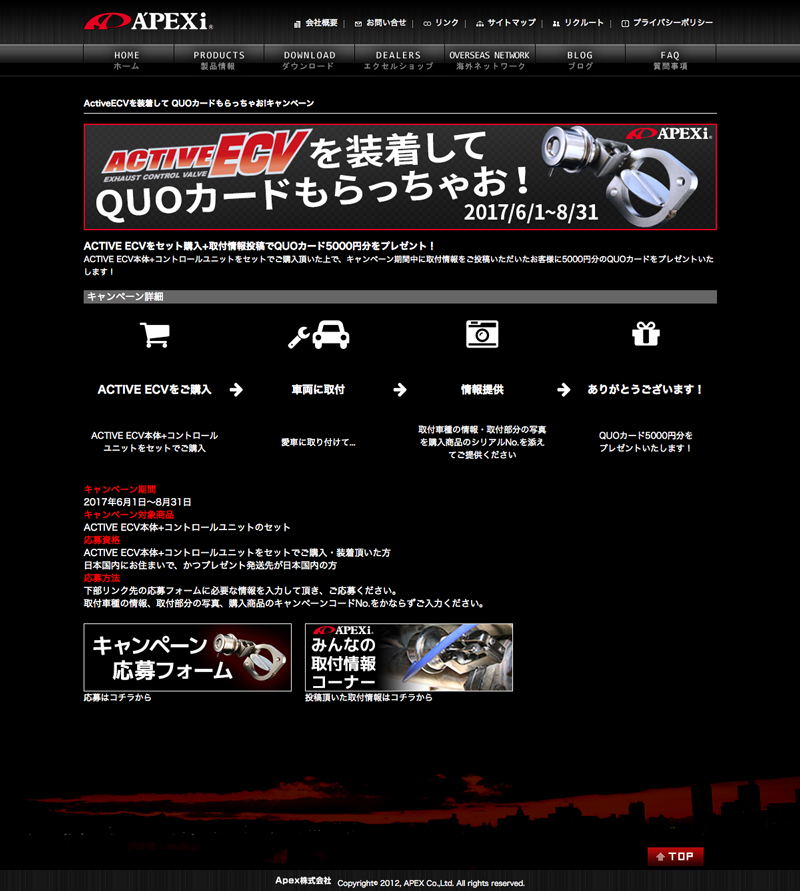
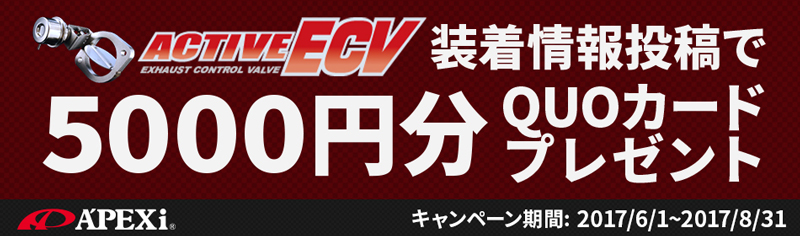

Wordpress, SublimeText, Adobe Photoshop / 2週間程度 / 2017年
自動車チューニングパーツメーカーの新商品キャンペーンページのデザインと構築を行いました。
顧客の要望点は、
・競合企業（大手）がエンドユーザーからのレビュー投稿サイトを作っているのを見て、同じようなことをやってみたい
・顧客企業の商品は車種専用ではない上級者向けの汎用品が多いため、どんな車両に取り付けられたかの情報を投稿から吸い上げたい
・競合相手のようにそれ専用のサイトを構築維持する余力はないので、既存サイト内で収めたい
というものでした。
顧客企業はあまり規模は大きくないものの、国内・海外にコアなファンを持っているタイプでした。
特約店の技術力の高さ故、汎用製品が予想外の車種に取り付けられていたりして「汎用で設計したが自社でも何につくのかわかっていない」という悩みがあったようです。
そこで新製品の汎用パーツの拡販キャンペーンも兼ねて、エンドユーザーからの投稿ページを制作するという話になりました。
運用コストを抑えるため、キャンペーンページから必要事項を投稿してもらい蓄積したデータを顧客側担当者でブログに反映させるという形で構築を行いました。
話があってからキャンペーン開始日まで時間がなかったため投稿フォームについてはコーダーさんに実装してもらい、自分の方で告知バナー2点（大・小）とキャンペーンページのデザイン・コーディングを行いました。
顧客企業新商品キャンペーンページ構築

